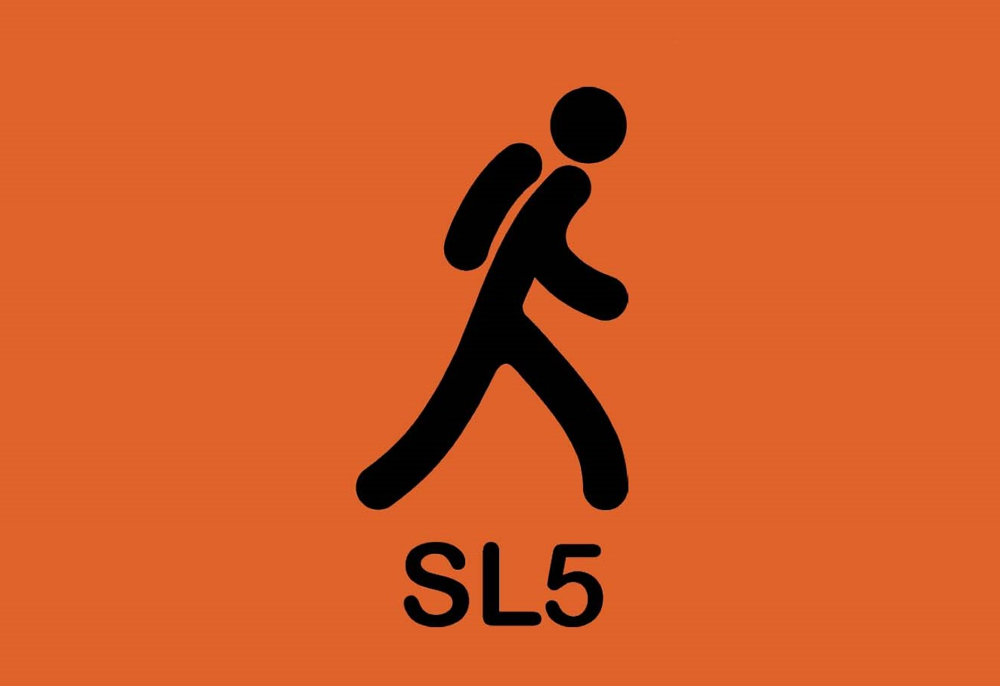
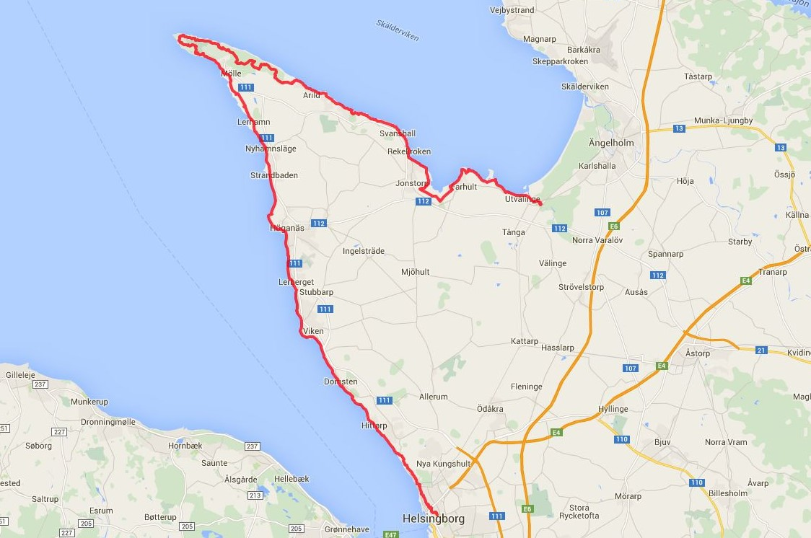

{kind=link}

Welcome to the Kullaleden Trail, marked with orange, taking you forward step by step.
{kind=link}

Kullaleden is 72 kilometers around the Kullahalvön peninsula from Helsingborg city center via Kullaberg Lighthouse to Utvälinge.
Welcome to the Kullaleden Trail, marked with orange, taking you forward step by step.
Kullaleden is 72 kilometers around the Kullahalvön peninsula from Helsingborg city center via Kullaberg Lighthouse to Utvälinge.
Kullaleden offers a great variety of experiences along the way. Here you find everything including the medieval city centre of Helsingborg, beautiful views over the straits from the plateau heights, the well-known Sofiero Palace, Kulla-Gunnarstorp and Krapperup Estates, beaches and picturesque seaside villages, and Kullaberg’s dramatic cliff formations.
Since prehistoric times, the sea has been a valuable resource. We have over-utilised the sea for a long time. Now we understand that we need to do more to keep the sea healthy. Trends are changing and we are now well on the way, each doing their part.
The burden of nutrients entering the sea is decreasing; shipping is becoming cleaner; an increasing number of wetlands are being created and awareness is increasing among people in general.
The Harbour seal is found on the Swedish west coast, as well as in two small colonies in the Baltic Sea, at Måkläppen and in the Kalmarsund Strait. The seals we see in Skälderviken belong to the colony on the skerries at Väderö in Halland.
The male grows to about 170 centimetres and weighs about 100 kg, while the female, which is slightly smaller, grows to 160 centimetres, weighing around 80 kg. The colour is speckled grey.
Plants are crucial to life in the sea. With the help of sunlight, plants transform carbon dioxide into energy-rich plant material, and they create oxygen. There are two different types of plant in the sea: flowering plants, which have roots and grow in soft bottoms, and Kelp which grows on hard bottoms, attaching itself with the help of a holdfast.
Plants are crucial to life in the sea. With the help of sunlight, plants transform carbon dioxide into energy-rich plant material, and they create oxygen. There are two different types of plant in the sea: flowering plants, which have roots and grow in soft bottoms, and Kelp which grows on hard bottoms, attaching itself with the help of a holdfast.
Large perennial algae such as Bladderwrack and Toothed wrack are important to the ecosystem.
The Swimmers’ Bay
The food store and nursery of the sea.
Shallow bays are highly productive. A lot of nutrition comes here from land and the spring sun quickly warms the shallow water. On a fine April day, while it is still 5-6 °C out at sea, it can be 10 to 15 °C near the shores. At a depth of 1m, biological production can be 10 times greater than at 10 m deep.
April - Brown shrimp and Littoral crab come in from deeper water.
May - Hundreds of small juvenile plaice drift in from the spawning grounds out in the Kattegatt.
June - There is a veritable invasion of Blunt gapers, cockles and sea mussels.
July - Newly hatched Brown shrimp and Littoral crab drift in to the bay on the current.
Autumn - In the autumn when it becomes cooler in the water, the fish, crabs and shrimp disappear to deeper water.
Winter - In winter there is calm in the swimmers’ bay.
The common porpoise Phocoena phocoena.
The only whale to constantly inhabit Swedish waters, the porpoise is endangered and red-listed. However, in Skälderviken and the north of Öresund there is still a good chance of seeing a porpoise.
The Smallest Whale
The porpoise grows to approximately 170 cm. The primary way to recognise a porpoise is the low, triangular dorsal fin.
An elusive deep diver When necessary, porpoises can dive to a depth of 240 meters.
No two stretches of coastline are identical. We find cliffs, cobblefields, gravel, sand and clay. The properties of water range from somewhat brackish to the east to genuine seawater to the west. We therefore have a greater abundance of species to the west, while the Baltic Sea has a unique mix of saltwater and freshwater species.
The form and shape of the landscape create different conditions for animals and plants, both above and below the sea surface. Rock bottoms have their populations and soft bottoms have theirs.
We know today that waters along the coasts are of considerable importance to all sea life. No two stretches of coastline are identical. We find cliffs, cobblefields, gravel, sand and clay. The properties of water range from somewhat brackish to the east to genuine seawater to the west. We therefore have a greater abundance of species to the west, while the Baltic Sea has a unique mix of saltwater and freshwater species.
The coastline is a unique area which is affected by what happens both on land and in the sea. Today this area is hotly discussed due to the rising sea levels.
The shores along Skälderviken are varied, from sandy to rocky. Farthest inside the bay there are white sandy beaches, while the opening to Kattegatt comprises rocky shores on both sides. Kullaberg rises in the south, a primary rock of horst offering high, steep shores.
Skälderviken is a bay on the Kattegatt. The area features genuine salt seawater and, via Öresund, the brackish water of the Baltic Sea. This fact means that the exchange of bottom and surface water is made more difficult, which can lead to a shortage of oxygen (hypoxia) on the seabed. The risk of oxygen shortage increases further when too many nutrients from land flow into the bay.
The whole of Skälderviken is an important area for life in the sea. Some areas are protected as nature reserves or are Natura 2000 areas.
Skälderviken is a spawning area for herring and is an extremely important breeding area for flatfish such as European plaice and Common dab. Other commercial fish species such as Cod, Lumpsucker and Eel hunt their prey here.
In the same way, the Eider and other diving ducks find important nutrition here. The bay is home to both seals and porpoises.

Many marine species require genuine salt water. In the coastal waters of Skåne we find these creatures only in the northern part of Öresund and in the Kattegatt, above all at Kullaberg. Below the pycnocline boundary out at the Kullaberg rocks, it is dark and cold but abundant in fauna in beautiful colours.
Kullaberg is the southernmost outpost of the purely marine species – further south the water is too brackish. At Kullaberg we find coral species – corals are animals not plants.
Kullaleden and Öresundsleden merge at Kärnan, which is the last remnant of the Helsingborg castle. The 34 meter high tower from the 1300s is later replaced with a tower from the 1100s. This is where the Danish Queen Dorothea and Barbara Brahe from Krapperup met before a pilgrimage to Rome in 1475. The surrounding buildings were demolished following the war in the 1600s. A wall chart below Kärnan illustrates the earlier state of the site. In the 1800s the Swedish flag through the work of Alfred Hellerström received its battlements and is now hung on top of Kärnan, which got it´s colors from Oscar Trapp. Trapp visited the National Museum in Amsterdam and managed to get a piece of a looted Swedish flag. Different manufacturers reproduced the colors differently and that´s how the bright colors were established.
Many marine species require genuine salt water. In the coastal waters of Skåne we find these creatures only in the northern part of Öresund and in the Kattegatt, above all at Kullaberg. Below the pycnocline boundary out at the Kullaberg rocks, it is dark and cold but abundant in fauna in beautiful colours.
Kullaberg is the southernmost outpost of the purely marine species – further south the water is too brackish. At Kullaberg we find coral species – corals are animals not plants.
Many marine species require genuine salt water. In the coastal waters of Skåne we find these creatures only in the northern part of Öresund and in the Kattegatt, above all at Kullaberg. Below the pycnocline boundary out at the Kullaberg rocks, it is dark and cold but abundant in fauna in beautiful colours.
Kullaberg is the southernmost outpost of the purely marine species – further south the water is too brackish. At Kullaberg we find coral species – corals are animals not plants.
Many marine species require genuine salt water. In the coastal waters of Skåne we find these creatures only in the northern part of Öresund and in the Kattegatt, above all at Kullaberg. Below the pycnocline boundary out at the Kullaberg rocks, it is dark and cold but abundant in fauna in beautiful colours.
Kullaberg is the southernmost outpost of the purely marine species – further south the water is too brackish. At Kullaberg we find coral species – corals are animals not plants.
 Sights of Heritage
Sights of HeritageWelcome to the Sights of Heritage, marvels of Swedish culture and history, transporting you into a rich and colorful past.
Kullaleden and Öresundsleden merge at Kärnan, which is the last remnant of the Helsingborg castle. The 34 meter high tower from the 1300s is later replaced with a tower from the 1100s. This is where the Danish Queen Dorothea and Barbara Brahe from Krapperup met before a pilgrimage to Rome in 1475. The surrounding buildings were demolished following the war in the 1600s. A wall chart below Kärnan illustrates the earlier state of the site. In the 1800s the Swedish flag through the work of Alfred Hellerström received its battlements and is now hung on top of Kärnan, which got it´s colors from Oscar Trapp. Trapp visited the National Museum in Amsterdam and managed to get a piece of a looted Swedish flag. Different manufacturers reproduced the colors differently and that´s how the bright colors were established.
In 1905, Oscar II's grandchild Prince Gustaf Adolf, future King Gustaf VI Adolf, and his wife, crown princess Margaret received the palace as a wedding gift. They renovated the palace and started the large Rhododendron garden for which the palace is known today. Prince Gustaf Adolf become king in 1950 and until 1973 Sofiero was his and his second wife Lady Louise Mountbatten's official summer residence. It was supposedly the King's favorite place.
Prince Gustav Adolf and his wife Margaret had Sofiero as a wedding gift in 1905. The English-born Princess Margaret was very knowledgeable garden and gave the garden a prominent role. She believed that people would use fewer varieties, but many out of each and put the specimens closely together, something that still lives on, for example, in Blomstergatan that bears her name. Crown Prince Gustaf Adolf, whose main interest was the rhododendron garden continued work after Margaret's death, even after he was king. Approximately 10 000 copies of the rhododendrons attracts thousands of visitors every year, especially during the flowering period. On the castle's website you can learn the latest information on flowering. There are also descriptions of the hikes illustrating the royal summer life, gentry and servants, Sofieros flowers and the sculptures found in the park.
King Gustav VI Adolf bequeathed the entire plant to the city of Helsingborg which took over in 1974. The park, which in 2010 was named Europe's best park, is also used for outdoor concerts and other events.
In 1717 there was a military fortification in Hittarp. During World War II was considered Hittarp have a position that could be sensitive to a possible hostile attack. Parts of the village was then cordoned off and those who lived inside the barricades were showcasing special passports. Still, there are different types of armor left from Skåne Line, which got its popular name, Per Albin-line, for the then Swedish Prime Minister. (Image taken in Molle) At Serpentinvägen subterranean radar station shown at times. Its antenna sticking up among the treetops.
The sea erosion that occured Below Kulla Gunnarstorp castle has affected the shoreline and because of this laid bare the sandstone ground, a reminder of when the sea level was 6-7 meters higher, approx. 4000-7000 years ago. The vertical sandstone ledges are saturated by water. The area is a nature reserve with beech wood, gullies and Bronze Age mounds and has been inhabited since prehistoric times.

{kind=link}